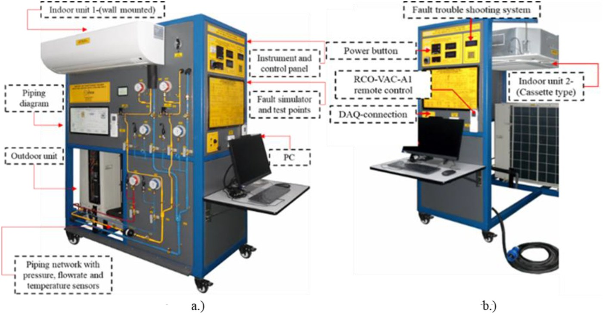
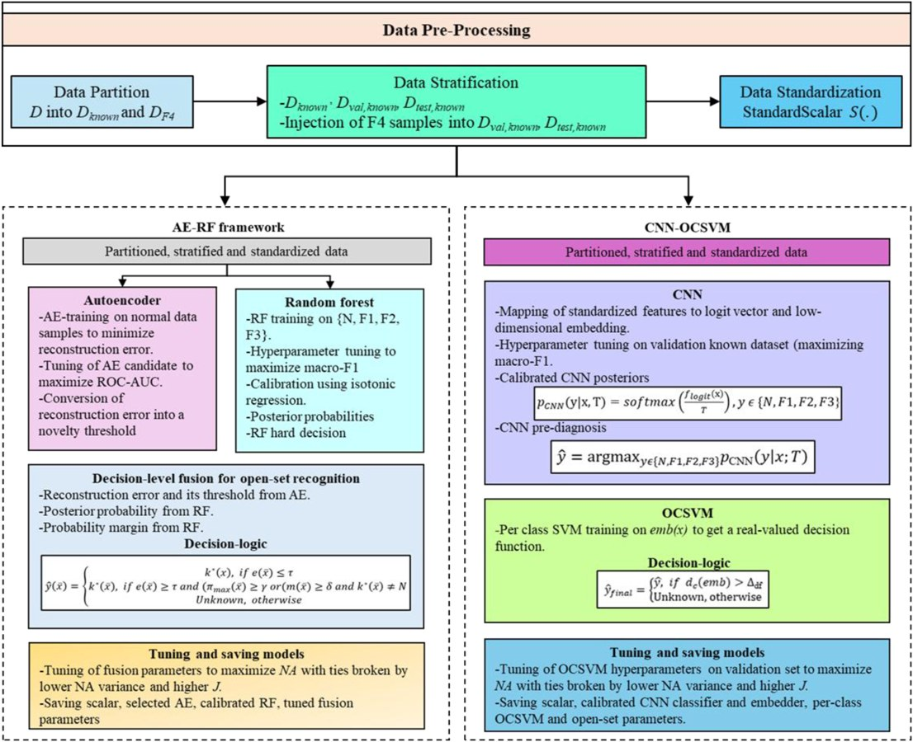
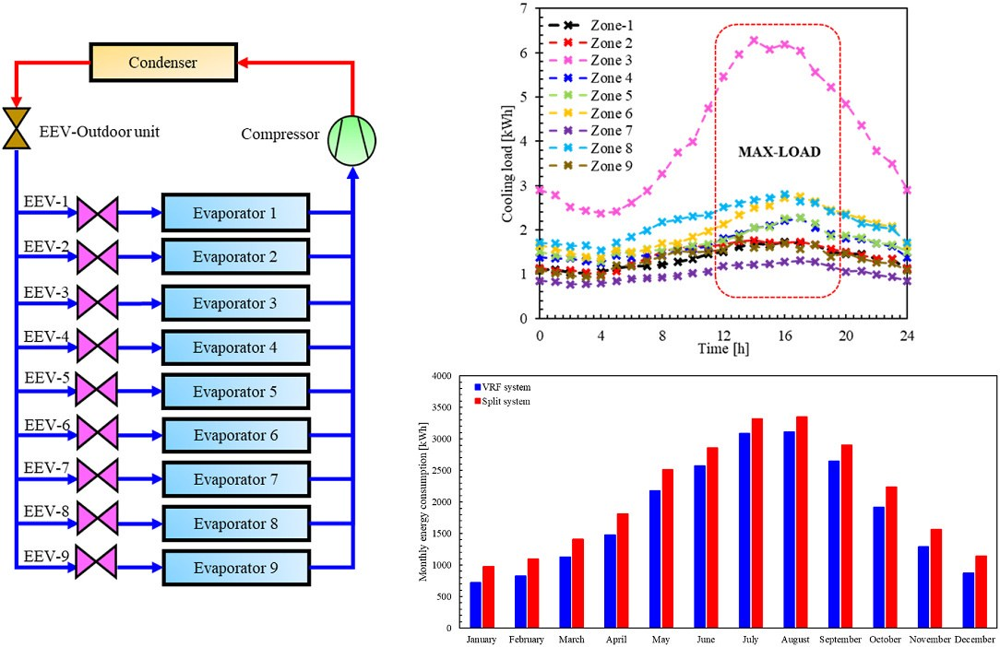
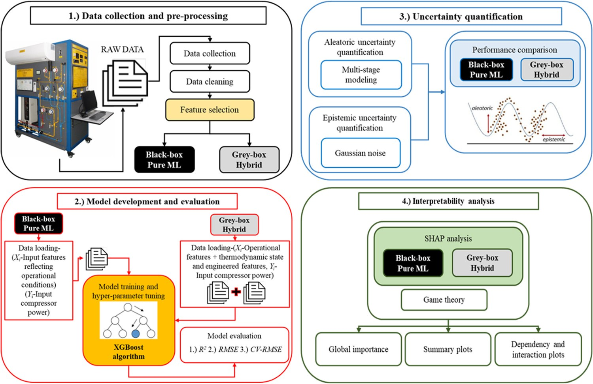
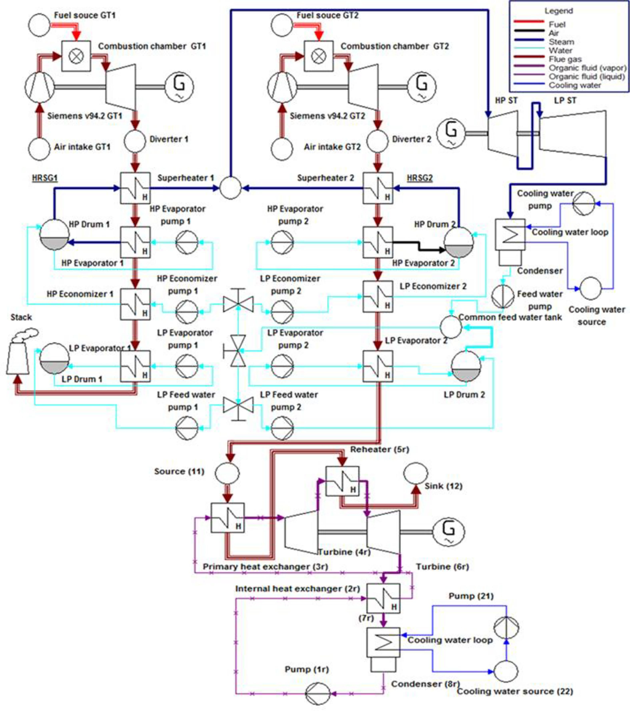

Energy and AI | Physics-Informed Machine Learning | Net Zero Energy Systems' Modeling | Fault Detection and Diagnosis | Smart HVAC | Organic Rankine Cycle-Based Waste Heat Recovery
Advancing intelligent, reliable, and efficient cooling and net zero energy systems.
I am Muhammad Reshaeel with a PhD in mechanical engineering from Khalifa University, Abu Dhabi, UAE. My work combines system's thermodynamics, data, and machine learning to develop hybrid grey-box energy prediction and fault detection models for net zero energy and advanced cooling systems.
Energy systems research grounded in thermodynamics, experiments, and AI.
My research lies at the intersection of thermodynamics, artificial intelligence, and sustainable energy systems, with a strong focus on intelligent HVAC technologies, smart buildings, and advanced thermal energy systems. I specialize in developing physics-informed and interpretable machine learning frameworks that integrate first-principles thermodynamic modeling with data-driven analytics to improve energy prediction, fault detection and diagnostics, system optimization, and operational reliability. My work spans variable refrigerant flow (VRF) systems, hybrid grey-box energy modeling, uncertainty-aware machine learning, and real-time intelligent diagnostics, with emphasis on robustness, explainability, and practical deployment in real-world engineering environments. In parallel, I have contributed to advanced research in waste heat recovery, organic Rankine cycles, exergy analysis, and sustainable power generation aimed at enhancing thermal efficiency and reducing environmental impact. Through this multidisciplinary approach, my research contributes toward the development of next-generation smart buildings, digitalized energy infrastructure, and resilient low-carbon energy systems that combine engineering physics with modern AI for sustainable technological advancement.
Research Themes
What I work on
A connected research agenda spanning intelligent buildings, HVAC reliability, and sustainable thermal systems.
Physics-informed machine learning
Hybrid physics-informed machine learning models for accurate, robust, and interpretable energy prediction and fault detection.
HVAC and VRF system diagnostics
Open-set and closed-set recognition of sensor and communication faults in variable refrigerant flow systems.
Thermodynamic performance
Transient cooling-load analysis, exergy assessment, uncertainty quantification, and performance evaluation of energy systems.
Advanced power cycles
Optimization of organic Rankine cycles for waste heat recovery and repowering of degraded combined-cycle power plants.
Building energy performance
System-level analysis of building cooling technologies, operational efficiency, and sustainable energy use.
Publications
Journal publications
7 peer-reviewed journal publications across energy systems, applied AI, fault diagnostics, thermal systems, and waste heat recovery.
A Hybrid Autoencoder-Random Forest Framework for Open-Set Recognition of Sensor and Communication Faults in a Variable Refrigerant Flow System with Real-Time Deployment Analysis
Reshaeel, M., and Ali, M. I. H. Energy, 2026.
DOIPhysics-guided, noise-resilient and interpretable machine learning framework for fault detection and diagnosis in variable refrigerant flow systems
Reshaeel, M., Khadkikar, V., and Ali, M. I. H. Energy and AI, 2026.
DOIEnhancing energy prediction in variable refrigerant flow cooling systems: A hybrid grey-box model integrating thermodynamic knowledge, experimental data and machine learning
Reshaeel, M., and Ali, M. I. H. Energy, 2026.
DOIConcentrated solar power driven desalination systems: A techno-economic review
M. I. Khan, M. Reshaeel, F. Asfand, S. G. Al-Ghamdi, M. Farooq, M. Khan, et al. Renewable and Sustainable Energy Reviews, 2026.
DOIInherent thermodynamic performance assessment of a variable refrigerant flow system under transient cooling load
Reshaeel, M., and Ali, M. I. H. Case Studies in Thermal Engineering, 2025.
DOIA critical review of the thermal-hydraulic performance of fin and tube heat exchangers using statistical analysis
Reshaeel, M., Abdelsamie, M. M., and Ali, M. I. H. International Journal of Thermofluids, 2024.
DOIMultiparametric optimization of a reheated organic Rankine cycle for waste heat recovery based repowering
Reshaeel, M., Javed, A., Jamil, A., Ali, M., Mahmood, M., and Waqas, A. Energy Conversion and Management, 2022.
DOI
Projects
Research projects
Applied research projects connecting experimental HVAC systems, machine learning, and deployable diagnostics.
VRF systems · FDD · Energy AI
Physics-Informed and Open-Set AI Frameworks for VRF Fault Detection and Diagnostics
This project develops robust, interpretable, and deployable fault detection and diagnostics for variable refrigerant flow (VRF) cooling systems. It combines a sensor-rich VRF experimental platform with physics-guided, noise-resilient machine learning for closed-set component-level faults and a hybrid autoencoder-random forest framework for open-set recognition of unfamiliar sensor and communication faults under real-time deployment conditions.


VRF systems · Energy prediction · Grey-box modelling
Thermodynamic Performance and Hybrid Grey-Box Energy Prediction for VRF Cooling Systems
This project investigates the energy, exergy, environmental, and predictive performance of VRF cooling systems for smart and net-zero buildings. It combines eco-villa cooling-load analysis, VRF cycle modelling, experimental system data, uncertainty quantification, and SHAP-based interpretability to develop hybrid grey-box machine learning models that improve energy prediction accuracy, robustness, and physical explainability compared with purely black-box approaches.


ORC · Waste heat recovery · Power plant repowering
ORC-Based Waste Heat Recovery for Repowering a Degraded Combined-Cycle Power Plant
This project investigated waste heat recovery-based repowering of a degraded combined-cycle gas turbine power plant using optimized organic Rankine cycle configurations. The work compared working fluids and cycle layouts, integrated 24-hour plant performance variation, and evaluated repowering potential through net power output, thermal efficiency, specific fuel consumption, specific water consumption, and greenhouse-gas-emission indicators.

Experience
Academic and Industrial Experience
Graduate Teaching Assistant
Khalifa University, Abu Dhabi. Assisted graduate teaching and conducted lab activities.
Lecturer
University of Wah, Pakistan. Taught thermodynamics and heat transfer and supported OBE academic planning.
Lab Engineer
CECOS University, Pakistan. Taught power plant labs and engineering thermodynamics while maintaining mechanical equipment.
Management Associate Engineer
Fauji Fertilizers Bin Qasim Limited, Pakistan. Worked on heat exchanger maintenance and cooling tower analysis.
Tools and technical strengths
Python, MATLAB, HAP, Cycle Tempo, System Advisor Model, ANSYS, Design Expert, machine learning, deep learning, statistical analysis, uncertainty quantification, exergy analysis, CO2 emissions analysis, HVAC test-bench development, and techno-economic analysis.
- Physics-informed and hybrid grey-box modelling
- Fault detection and diagnostics for HVAC systems
- Uncertainty quantification and explainable AI
- Energy, exergy, and environmental performance analysis
Honors and Awards
Academic recognition
Scholarships, research awards, and merit-based academic distinctions across doctoral, master's, and undergraduate study.
Graduate Research Award
Khalifa University
Doctoral Research Scholarship Award
Khalifa University
NUST-PRISM Merit-based Scholarship
National University of Sciences and Technology
President Gold Medal
MSc Thermal Energy Engineering, NUST
BSc Distinction
Mechanical Engineering, UET Peshawar
Best Final Year Project
Environment Category, UET Peshawar
Contact
Open to research collaboration in intelligent energy systems.
For academic collaboration, postdoctoral opportunities, and research discussions, please get in touch by email or through any of my academic and professional platforms.